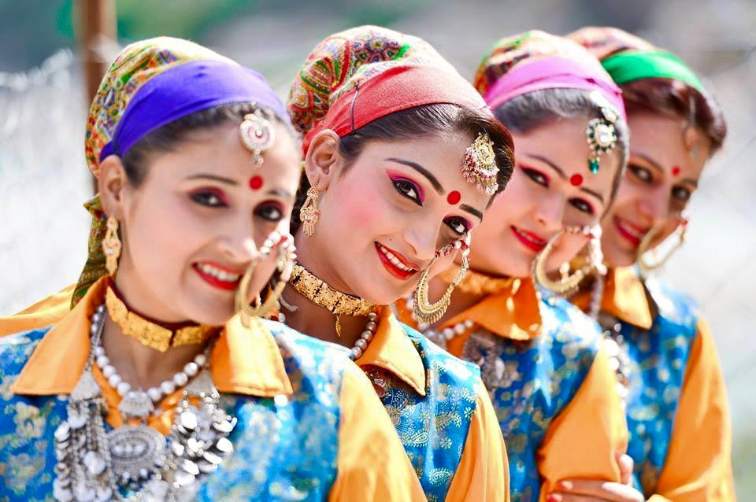

Uttarakhand
- Home
- Food
- Fashion


- Festival
- Uttarayani Fair
-
Nanda Devi Fair
-
Ramman
Ramman
Ramman, a religious festival in the form of the theater is featured on the list of the Intangible Cultural Heritage of Humanity in India. It is celebrated exclusively in the Garhwal Region of Uttarakhand at the twin villages of Saloor-Dungra in Chamoli district. The unique festivities are a significant form of heritage of only 196 families, 1800 people of the quaint villages without worrying about caste and creed..
Nanda Devi Fair
In the hilly state of Uttarakhand, there are a large number of temples. These temples are the venues of many fairs that are held when the festivals are celebrated. The essentially religious minded people of the state celebrate the Nanda Devi Fair in remembrance of the goddesses Nanda and Sunanda. It is held in many places in Uttarakhand like Almora, Nainital, Nauti, Dandidhara, Munsyari, Ranikhet, Bhowali, Kichha and also in the small sleepy hamlets of Lohar (like Milam and Martoli) and Pindar valleys (like Wachham and Khati). The fairs at Almora and Roopkund draw the largest number of people -
Ramman
Uttarayani Fair
The Uttarayani Fair is a fair which showcases the culture of the land. The Uttarayani Fair in Uttarakhand is held in a number of places like Bageshwar, Rameshwar, Suit Mahadev, Chitrashila (Ranibagh) and Hanseshwar. In Bageshwar, the fair attracts the largest number of people. It is held in the premises of the holy Bageshwar temple. The Uttarayani Fair provides the social and political workers with an important platform to express their grievances. It has consequently played a vital role in the local movements. -
Nanda Devi Fair
- Uttarayani Fair